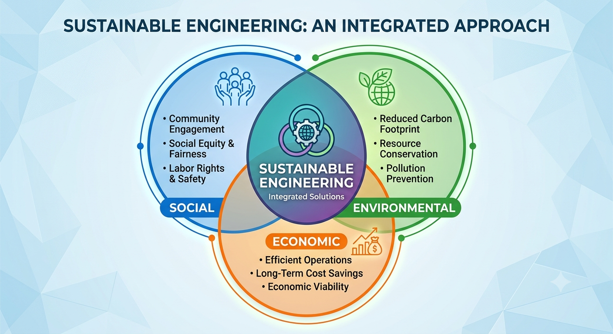
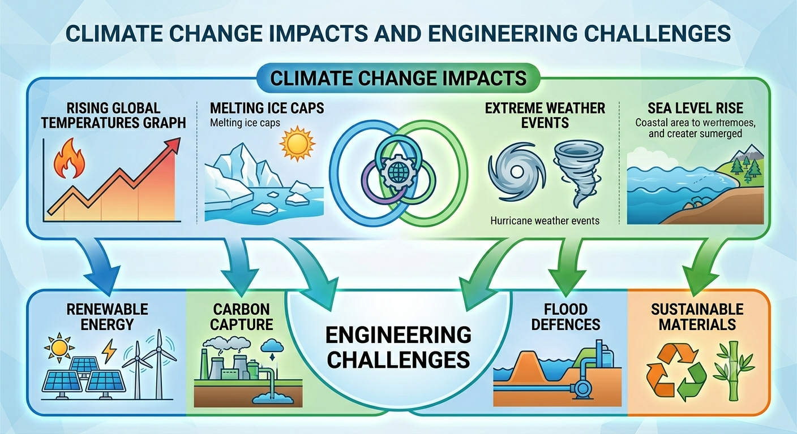

Every engineering project — from a new road to a smartphone — has an impact far beyond its immediate purpose. Engineers must consider the effects their work has on society, the economy and the environment. These impacts can be positive or negative, short-term or long-term, local or global.
The QS specification requires you to be able to give examples of social, economic AND environmental impacts — both positive AND negative — for engineering projects.

Section 2: Social Impacts
Social impacts are the effects an engineering project has on people and communities — their lives, lifestyles, wellbeing and culture.
When assessing social impact, consider: the facilities the project provides, how lifestyles may change, whether jobs are created or lost, effects on tourism, and how communities or cultures may be affected.
✅ Positive social impacts
+New hospitals and medical technology improve health outcomes and life expectancy
+New roads and bridges improve connectivity, reducing journey times and isolation
+Clean water engineering prevents disease and improves quality of life
+Renewable energy provides affordable electricity to more communities
+Communications engineering connects people globally, enabling education and commerce
+Construction and operation of new projects create job opportunities for local people
+Increased tourism raises a community's profile and can strengthen local culture and identity
+Improved energy security increases a community's resilience to global price shocks and supply disruption
❌ Negative social impacts
−Construction projects can cause noise, dust and disruption to local residents
−Large infrastructure projects may displace communities from their homes
−Automation reduces the need for human workers, leading to unemployment
−Industrial facilities can reduce property values and quality of life nearby
−Over-reliance on technology can lead to loss of traditional skills
−New technology can make traditional industries obsolete, changing community identity and established employment patterns
✏️ Task 1 — Social impacts
1. A new bypass road is built to route heavy traffic around a town centre. Give one positive and one negative social impact this could have on the local community.
Answer ✓ Saved
2. A new wind farm is built on a hillside near a rural community. Give one positive and one negative social impact this could have on the local people.
Answer ✓ Saved
Section 3: Economic Impacts
Economic impacts are the effects an engineering project has on money, trade and the economy — locally, nationally and internationally.
When assessing economic impact, consider: where funding came from, effects on local businesses, running costs, profits and economic growth.
⚠️ Exam tip — social or economic? Some impacts can sound like either category, so in QS exam answers examiners generally expect: employment being created or lost is a social impact, unless salaries or household finances are specifically mentioned. Increased tourism (more visitors) is social, but the revenue that tourism generates is economic. Improved energy security is social, but reduced import costs are economic. Unemployment caused by automation is social, but the resulting drop in family income is economic. An industry becoming obsolete is social, but the cost of decommissioning it is economic.
✅ Positive economic impacts
+Construction and operational spending boosts income for local businesses and suppliers
+New roads and bridges reduce transport costs for businesses, improving productivity
+Landmark structures generate visitor spending, boosting revenue for local businesses (e.g. the Forth bridges)
+Renewable energy reduces the cost of importing fossil fuels from abroad
+Engineering exports earn income for a country (e.g. Scottish wind turbine expertise)
❌ Negative economic impacts
−Large projects are very expensive and may require public funding (taxpayers' money)
−Job losses from automation reduce household income and local spending power
−High maintenance costs continue long after construction is complete
−Cost overruns are common in large engineering projects, diverting funds from other needs
−Decommissioning or deconstructing obsolete industrial sites (e.g. old coal plants) is expensive
✏️ Task 2 — Economic impacts
1. A new international airport terminal is built near a small coastal town, creating hundreds of construction and operational jobs. Give one positive and one negative economic impact this could have on the local area.
Answer ✓ Saved
2. A car manufacturer replaces much of its production line with automated robotic assembly. Give one positive and one negative economic impact this could have on the company and the local economy.
Answer ✓ Saved
Section 4: Environmental Impacts
Environmental impacts are the effects an engineering project has on the natural world — air, water, land, wildlife and the climate.
When assessing environmental impact, consider: location and habitat disruption, pollution (air, water, noise, light), use of materials and resources, sustainability and recyclability, and long-term versus short-term effects.
✅ Positive environmental impacts
+Renewable energy engineering reduces carbon emissions compared to fossil fuels
+Water treatment engineering prevents pollution of rivers and seas
+Electric vehicles reduce air pollution in cities
+Modern building insulation engineering reduces energy consumption
+Biodegradable and recycled materials engineering reduces landfill waste
❌ Negative environmental impacts
−Construction causes habitat destruction, noise and dust pollution
−Fossil fuel power stations release CO2 and other greenhouse gases
−Mining for materials (copper, lithium, rare earths) damages landscapes
−Industrial waste and chemical runoff can pollute water sources
−Wind turbines can affect bird and bat populations and visual landscape
✏️ Task 3 — Environmental impacts
1. A new quarry is opened to extract stone for a major construction project. Give one positive and one negative environmental impact this could have on the surrounding area.
Answer ✓ Saved
2. Sustainable engineering means meeting current needs without preventing future generations from meeting theirs. Give two examples of engineering decisions that demonstrate sustainable thinking.
Answer ✓ Saved
Section 5: Engineering and Climate Change
Climate change is one of the most important engineering challenges of our time. The burning of fossil fuels releases CO2 and other greenhouse gases, which trap heat in the atmosphere and cause global temperatures to rise. Engineers are at the forefront of developing solutions.

Engineering solutions to climate change
Tackling climate change needs contributions from many branches of engineering, and no single technology solves it alone. The projects below are a few examples of engineering work currently helping to address the situation.
Carbon Capture and Storage (CCS)
CO2 produced at power stations is captured before it enters the atmosphere, compressed and stored underground in depleted oil and gas fields. Chemical engineers design the capture processes; civil engineers design the storage infrastructure. This allows fossil fuels to be used with reduced carbon emissions while renewable alternatives are developed.
Coastal Flood Defences
Rising sea levels (caused by melting ice caps) threaten coastal cities. Civil and structural engineers design flood barriers, sea walls and tidal barriers (such as the Thames Barrier) to protect communities. These are expensive but essential responses to climate change impacts.
Grid-Scale Energy Storage
Renewable energy sources (such as wind and solar) are intermittent — they only generate when the wind blows or the sun shines. Electrical and chemical engineers are developing large-scale battery storage systems, pumped hydro storage and hydrogen production to store excess renewable energy for use when generation is low.
Zero-Emission Transport
Mechanical and electrical engineers are developing electric vehicles, hydrogen fuel cell buses and electric aircraft to reduce transport emissions — currently one of the largest sources of greenhouse gases. Scotland aims to phase out petrol and diesel cars by 2030.
✏️ Task 4 — Climate change engineering
1. Describe what climate change is and list three ways it is affecting the planet.
Answer ✓ Saved
2. Describe three engineering solutions to climate change. For each, explain how it works and what effect it has on the environment.
Solution 1:
Description and environmental effect ✓ Saved
Solution 2:
Description and environmental effect ✓ Saved
Solution 3:
Description and environmental effect ✓ Saved
3. Research: find a method by which CO2 could be captured or used. Describe how it works.
Research notes ✓ Saved
Section 6: Emerging Technologies
Engineering is constantly evolving — making things smaller, lighter, faster, more efficient and more sustainable. Emerging technologies are new developments that are currently being developed or have recently become available. The specific technologies making headlines will keep changing, but they tend to fall into a small number of broad areas that engineers keep pushing forward.
Areas of technology that keep evolving
📱 Communications and Connectivity
Networks and devices are continually redesigned to move data faster, more reliably and with less delay. Each generation of communications technology tends to unlock applications that weren't practical before it — such as remote monitoring, connected vehicles or instant access to information — and this pattern is likely to continue as the technology keeps improving.
🤖 Artificial Intelligence and Automation
AI and robotics are being applied across an ever-widening range of industries, including manufacturing, medicine, transport and agriculture. As the underlying technology improves, systems become able to take on more complex tasks and decisions that previously needed a human operator, changing how many jobs and processes work.
🧬 Materials Science and Bio-Engineering
Engineers are continually developing new materials to replace less sustainable ones — for example plastics and fabrics made from plant or recycled sources that break down more easily. Bio-engineers are also working on technology that can repair, replace or interface with parts of the human body, such as grown tissue for transplants and prosthetics.
🖨️ Manufacturing Methods
New ways of making things — such as additive manufacturing (3D printing), which builds objects layer by layer from a digital file — continue to be refined. As these methods mature they tend to work with a wider range of materials and produce larger, more complex or more customised products at lower cost.
🔋 Energy Storage and Generation
Batteries and other ways of storing and generating energy are constantly being redesigned to store more energy in a smaller, lighter and safer package, and to charge or generate more efficiently. Improvements in this area affect a wide range of products, from electric vehicles and portable electronics to renewable energy grids.
✏️ Task 5 — Emerging technologies
Research two emerging technologies that interest you. For each, describe the problem it solves, how the technology works, and what effect it may have on society or the environment. Your examples must be recent — either still in development or released within the last few years.
💡 Tip: Not sure where to start? Try searching something like "top 10 emerging technologies" in a search engine — this will bring up current, up-to-date examples. Try to use a source published within the last year or so, and check more than one source if you can.
Emerging Technology 1:
Problem it solves ✓ Saved
How it works ✓ Saved
Potential impact ✓ Saved
Emerging Technology 2:
Problem it solves ✓ Saved
How it works ✓ Saved
Potential impact ✓ Saved
Section 7: Putting It All Together — Case Study
Use this section to bring together all three types of impact for a major engineering project of your choice. This mirrors the style of QS exam questions and the Engineering Contexts assignment.
📋 Task 6 — Full impact case study
Choose a major engineering project (your own choice — bridge, hospital, wind farm, electric vehicle programme, space mission, water treatment plant etc.).
Project name and brief description ✓ Saved
Social impacts — describe at least two positive AND two negative social impacts of your project. Consider: community facilities, lifestyle changes, job creation/loss, tourism, cultural effects.
Social impacts ✓ Saved
Economic impacts — describe at least two positive AND two negative economic impacts. Consider: funding sources, jobs, trade, running costs, profits.
Economic impacts ✓ Saved
Environmental impacts — describe at least two positive AND two negative environmental impacts. Consider: location, pollution, sustainability, short and long-term effects.
Environmental impacts ✓ Saved
Emerging technology — choose one emerging technology and describe how it might affect your project in the future, whether by changing how it is built, operated, or replaced.
Emerging technology and future impact ✓ Saved
Section 8: Engineering Challenges
The tasks above asked you about one type of impact at a time. These challenges are closer to a real assignment brief: each one describes a Scottish engineering project and gives you a written specification. Your job is to work out what impacts the specification implies, sort them into the right categories, deal with a problem that crops up part-way through the project, and then weigh everything up to reach a justified decision.
How to approach these: Read the context and the whole specification before you start writing. Every specification point tells you something the project must do — ask yourself who that affects (social), what it costs or earns (economic) and what it does to the natural world (environmental). Always say whether an impact is positive or negative, and use the exam tip in Section 3 when an impact could sound like either social or economic. In the evaluation questions there is no single right answer: marks come from a balanced argument and a conclusion that follows from it.
Challenge 1 — Heat from the old mines
Deep below a former mining town in Fife, the old coal workings have flooded with water that stays at a steady, slightly warm temperature all year round. The local council plans to use this water to heat homes. Water will be pumped up from the mine, a large heat pump in a new energy centre will raise its temperature, and insulated pipes laid under the streets will carry hot water to 400 homes, the primary school and the leisure centre. At the moment, every one of these buildings is heated by its own gas boiler.
i
The scheme must supply heating and hot water to 400 homes, the primary school and the leisure centre, replacing their individual gas boilers.
ii
Heating bills for connected households must be no higher than their current gas bills.
iii
The pipe network must be laid under existing streets within 18 months, with at least one route into the town centre kept open at all times.
iv
The scheme must cut the carbon emissions from heating these buildings by at least 60%.
v
Mine water must be returned underground after use, without contaminating local rivers or burns.
✏️ Challenge 1 — Heat from the old mines
C1a. For each specification point (i–v), identify one impact it implies. State whether the impact is social, economic or environmental, and whether it is positive or negative.
Impacts of the specification ✓ Saved
C1b. Specification point ii is about household heating bills. Explain whether meeting this point is a social or an economic impact, then describe one related impact that belongs to the other category.
Social or economic? ✓ Saved
C1c. Six months into construction, pipe-laying on the main shopping street is running late. Shopkeepers report fewer customers and residents complain about noise and diversions. Describe the impacts of this problem, covering at least two categories, and suggest one way the engineers could reduce them.
Impacts and response ✓ Saved
C1d. Once the scheme is running, the council must decide whether to extend it to a further 600 homes. Evaluate the scheme by weighing up its positive and negative impacts, using at least one impact from each category, and give a justified recommendation.
Evaluation and recommendation ✓ Saved
Challenge 2 — Reopening the branch line
A railway branch line in Aberdeenshire closed in the 1960s. Since then, the town at the end of it has grown quickly, and most people now drive to work in Aberdeen along a busy, congested road. Transport Scotland is considering reopening a 25 km stretch of the old line. Much of the old route still exists, although parts of it have become a woodland walking path and a corridor for wildlife.
i
The journey from the town to Aberdeen city centre must take less than 30 minutes, with a train every 30 minutes at peak times.
ii
A new station must be built with a 300-space car park and a bus interchange.
iii
The line must follow the old route where possible. Where the old route is now used as a walking path, a replacement path must be provided alongside it.
iv
Only battery-electric trains may be used on the line; no diesel trains.
v
The project is publicly funded and must be delivered within its agreed budget.
✏️ Challenge 2 — Reopening the branch line
C2a. For each specification point (i–v), identify one impact it implies. State whether the impact is social, economic or environmental, and whether it is positive or negative.
Impacts of the specification ✓ Saved
C2b. Specification point iv requires battery-electric trains. Explain how this choice links to tackling climate change, then describe one positive and one negative impact of using battery-electric trains instead of diesel.
Battery-electric trains ✓ Saved
C2c. A wildlife survey finds a colony of protected bats roosting in an old stone bridge that the line must cross. The bridge cannot be demolished during the breeding season. Describe the impacts this problem has on the project, covering at least two categories, and suggest how the engineers could respond.
Impacts and response ✓ Saved
C2d. Opinion in the town is divided. Commuters are strongly in favour, but some residents living near the new station are worried about traffic and noise. Write a balanced evaluation of the project, using at least one impact from each category, and state whether you think it should go ahead.
Evaluation and recommendation ✓ Saved
Challenge 3 — Giving old batteries a new life
As more people switch to electric vehicles, thousands of worn-out car batteries will need to be dealt with every year. A company plans to build a battery recycling plant on a former industrial site beside the Firth of Forth. The plant will break down used batteries and recover valuable metals such as lithium, cobalt and nickel so they can be made into new batteries. Most of the handling will be done by automated machinery, because damaged batteries can catch fire and are dangerous to handle by hand.
i
The plant must be able to recycle the batteries from 20,000 electric vehicles every year.
ii
At least 90% of the lithium, cobalt and nickel in each battery must be recovered for reuse.
iii
The plant must be built on the existing former industrial site, not on undeveloped land.
iv
Battery handling must be automated. The plant will employ 150 permanent staff, many in new technician roles that need training.
v
Used batteries must be delivered by rail or sea wherever possible, rather than by road.
✏️ Challenge 3 — Giving old batteries a new life
C3a. For each specification point (i–v), identify one impact it implies. State whether the impact is social, economic or environmental, and whether it is positive or negative.
Impacts of the specification ✓ Saved
C3b. Specification point ii requires most of the metals to be recovered. Explain how recycling these metals could reduce one negative environmental impact and one negative economic impact of making new batteries.
Why recover the metals? ✓ Saved
C3c. During testing, a small fire breaks out in a storage area for damaged batteries. Nobody is hurt, but it is reported in the local news and nearby residents become worried. Describe the impacts of this incident, covering at least two categories, and suggest one engineering change that would reduce the risk of it happening again.
Impacts and response ✓ Saved
C3d. The company is considering automating even more of the plant, which would reduce the number of permanent staff from 150 to 60. Evaluate this proposal by weighing up its impacts, using at least one impact from each category, and give a justified recommendation.
Evaluation and recommendation ✓ Saved
💾 Answers saved automatically in this browser on this device.